Startwert x_0 = 0.3000
Iterationsschritt i = 1, x_i = 0.3000
f(x_i) = -0.9100
fp(x_i) = 0.6000
x_(i+1) = 1.8167
Iterationsschritt i = 2, x_i = 1.8167
f(x_i) = 2.3003
fp(x_i) = 3.6333
x_(i+1) = 1.1836
Iterationsschritt i = 3, x_i = 1.1836
f(x_i) = 0.4008
fp(x_i) = 2.3671
x_(i+1) = 1.0142
Iterationsschritt i = 4, x_i = 1.0142
f(x_i) = 0.0287
fp(x_i) = 2.0285
x_(i+1) = 1.0001
Endergebnis nach 5 Iterationen: x_(ns) = 1.000133 Numerische Algorithmen
33.1 Newton-Raphson-Verfahren
Eines der einfachsten und auch ältesten Verfahren zur Suche von Nullstellen von Funktionen ist das Newton-Raphson-Verfahren, welches bereits im 17-ten Jahrhundert entwickelt und eingestetzt wurde.
33.1.1 Anwendungen
Das Finden von Nullstellen ist die Grundlage für viele Verfahren, welche z.B. für
- das Lösen von nicht-linearen Gleichungen,
- das Finden von Extremwerten, oder
- Optimierungsverfahren
eingesetzt werden kann.
33.1.2 Grundidee
Die Grundidee beruht auf einer iterativen Suche der Nullstelle \(\mathsf x_{ns}\) einer stetig differenzierbaren Funktion \(\mathsf f(x)\) mit Hilfe der ersten Ableitung \(\mathsf f'(x)\). Durch das Anlegen von Tangenten an die aktuelle Näherung der Nullstelle \(\mathsf x_i\) kann die nächste Näherung bestimmt werden.
Bei gegebenen Startwert, \(\mathsf x_0\) für den ersten Iterationsschritt (\(\mathsf i=0\)), können die folgenden Näherungen durch
\[\mathsf x_{i+1} = x_i - \frac{f(x_i)}{f'(x_i)} \]
berechnet werden. Dabei bestimmt die Wahl des Startwerts, welche der ggf. mehreren Nullstellen gefunden wird.
33.1.3 Beispiel 1
Gegeben ist die Funktion \(\mathsf f(x) = x^2 - 1\). Die Ableitung ist gegeben durch \(\mathsf f'(x) = 2x\) und die Nullstellen lauten \(\mathsf x_{ns} = \{-1, 1\}\).
Bei einem Startwert von \(\mathsf x_0 = 0.3\) führt zu folgender Iteration:
<Figure size 672x480 with 0 Axes>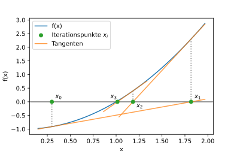
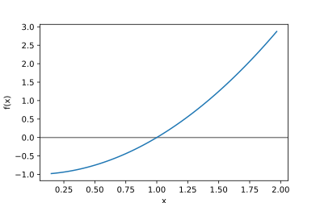
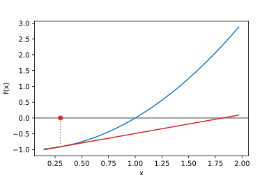
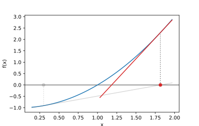
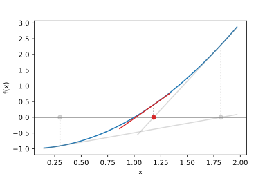
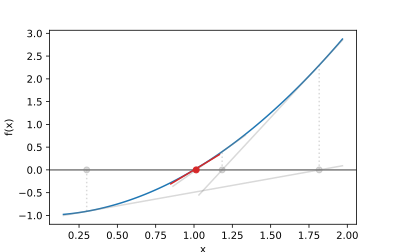
33.1.4 Beispiel 2
Gegeben ist die Funktion \(\mathsf f(x) = \sin(x) - 0.5\) mit der Ableitung \(\mathsf f'(x) = \cos(x)\).
def f(x):
return np.sin(x) -0.5
def fp(x):
return np.cos(x)
x0 = 1.3
print('Startwert x_0 = {:.4f}'.format(x0))
print()
n = 5
xi = [x0]
for i in range(1,n):
xp = xi[i-1]
xn = xp - (f(xp)/fp(xp))
print('Iterationsschritt i = {:2d}, x_i = {:.4f}'.format(i, xp))
print(' f(x_i) = {:.4f}'.format(f(xp)))
print(' fp(x_i) = {:.4f}'.format(fp(xp)))
print(' x_(i+1) = {:.4f}'.format(xn))
print()
xi.append(xn)
print()
print('Endergebnis nach {} Iterationen: x_(ns) = {:.4f}'.format(n, xi[-1]))Startwert x_0 = 1.3000
Iterationsschritt i = 1, x_i = 1.3000
f(x_i) = 0.4636
fp(x_i) = 0.2675
x_(i+1) = -0.4329
Iterationsschritt i = 2, x_i = -0.4329
f(x_i) = -0.9195
fp(x_i) = 0.9077
x_(i+1) = 0.5801
Iterationsschritt i = 3, x_i = 0.5801
f(x_i) = 0.0481
fp(x_i) = 0.8364
x_(i+1) = 0.5226
Iterationsschritt i = 4, x_i = 0.5226
f(x_i) = -0.0009
fp(x_i) = 0.8665
x_(i+1) = 0.5236
Endergebnis nach 5 Iterationen: x_(ns) = 0.5236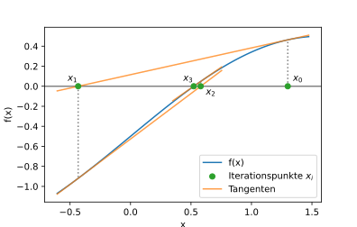
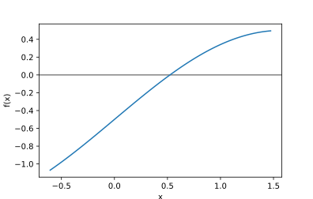
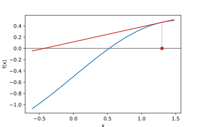
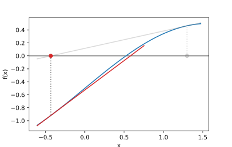
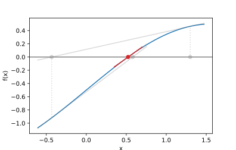
33.2 Euler-Verfahren
Das explizite Euler-Verfahren ist ein einfacher Algorithmus zur Bestimmung von Näherungslösungen von gewöhnlichen Differentialgleichungen, insbesondere Anfangswertprobleme. Das Verfahren wird hier anhand einer linearen Differentialgleichung 1. Ordnung demonstiert, hier ist \(\mathsf y = y(t)\) eine Funktion der Zeit \(\mathsf t\). Die Differentialgleichung lautet
\[\dot y(t) + a(t)y(t) + b(t) = 0\]
Mit einem vorgegebenen Anfangswert \(\mathsf y_0 = y(t_0)\) kann die Näherungslösung iterativ bis zur gewünschten Endzeit \(\mathsf t_e\) bestimmt werden. Dazu muss das betrachtete Zeitintervall \(\mathsf[t_0, t_e]\) in \(\mathsf n_t\) Teilintervalle aufgeteilt werden. Die Länge eines Teilintervalls ist
\[\mathsf \Delta t = \frac{t_e - t_0}{n_t}\quad .\]
Das iterative Verfahren beschreibt die Bestimmung der Lösung im nächsten Zeitinterval \(\mathsf t_{i+1}\)
\[\mathsf y(t_{i+1}) = y(t_i) - \Delta t \big(a(t_i)y(t_i) + b(t_i)\big)\quad .\]
33.2.1 Beispiel 1
Mit \(\mathsf a(t) = 1\), \(\mathsf b(t) = 0\) und einem Anfangswert von \(\mathsf y_0 = 1\).